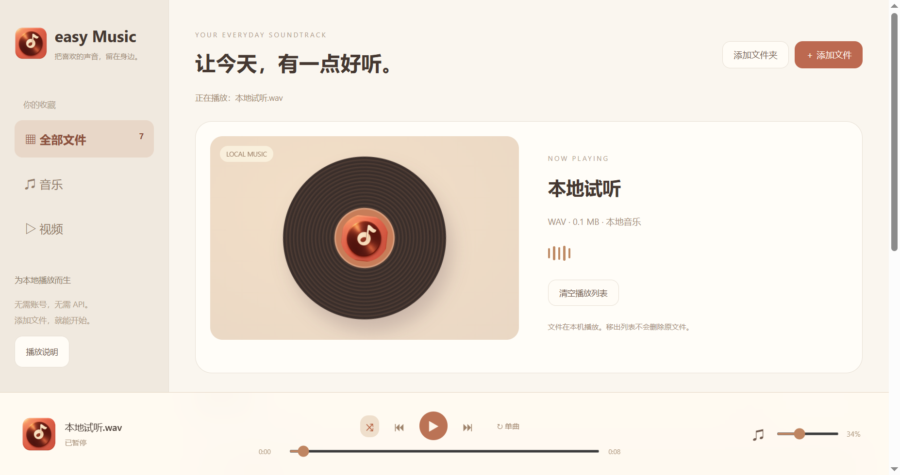

把本地声音打开
MP3、AAC/M4A、WAV、FLAC、OGG/Opus 是主要目标格式。添加文件、多选文件或拖入窗口，无需账号或 API。
 easy Music
easy Music把本地音乐和视频，放进一个温暖、简单的播放器。选一首喜欢的歌，也选一种自己的节奏。
下载 easy Music ↓
MP3、AAC/M4A、WAV、FLAC、OGG/Opus 是主要目标格式。添加文件、多选文件或拖入窗口，无需账号或 API。
支持 MP4、M4V、WebM，带视频控制和全屏。已用 H.264 MP4 与 WebM 样本验证画面和播放进度。
暂停、上一首、下一首、拖动进度、音量、静音、列表循环、单曲循环和随机播放，放在底部一条控制栏。
按音乐或视频筛选，也可搜索文件名。列表和设置保存在本机；移出列表不删除原文件。
空格播放暂停，左右键快进快退，M 静音，Ctrl+O 添加文件。文件夹导入只添加当前层，不扫描整个磁盘。
适合收藏本地音乐、听离线音频、观看常见本地视频的用户。它是独立本地播放器，不是流媒体或音乐下载服务。
打开 easy Music，点击添加文件或添加文件夹，也可以从资源管理器直接拖入窗口。
双击播放列表条目或点击播放。底栏提供暂停、上一首、下一首、随机与循环方式。
拖动进度条跳转，右侧滑杆调音量。播放视频时，可点击视频全屏；Esc 退出。
关闭后列表与设置保留。再次打开不会自动播放，点击播放会从上次选中的文件开始。
默认安装到 D:\easy Music，可在向导中更改位置。安装包不包含个人播放列表或测试音视频。
141.1 MiB · Windows 10 / 11 x64扩展名不保证内部编码可用。DRM 或加密音乐、APE、WMA、部分 ALAC/HEVC 不保证播放；可转换为普通 MP3、AAC/M4A 或 H.264 MP4。
当前没有联网歌词、均衡器、转码或流媒体登录。应用界面当前为简体中文；本网站介绍支持中英文。
仅本机读取媒体。列表与设置保存到 %APPDATA%\easy Music\library.json，不修改原文件。当前安装包未签名，尚未在全新 Windows 设备做安装卸载验收。
GitHub Releases